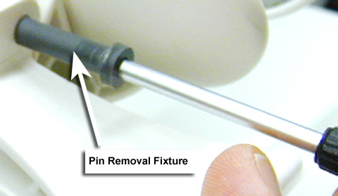
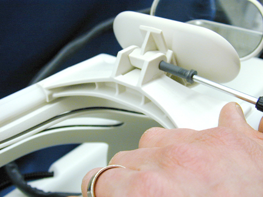
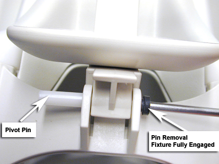
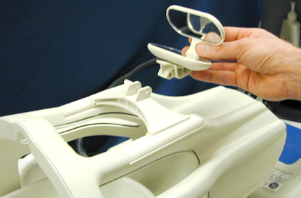
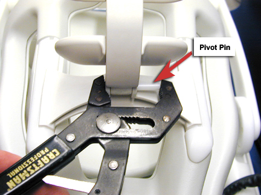

Operating Documentation
Direction 5133315-3, Rev# 14
Signa EXCITE HD 1.5T Service Methods
Module Version 2.0, Version Date 5/17/09
Operating Documentation |
| Required Persons | Preliminary Reqs | Procedure | Finalization |
|---|---|---|---|
| 1 | 15 mins |
Follow this process to replace the mirror assembly on the 1.5T Neurovascular (NV) Array by Medrad (M3087JJ).
| Item | Qty | Effectivity | Part# | Manufacturer | |
|---|---|---|---|---|---|
| Pair of Adjustable Pliers | 1 | - | - | - | |
| #1 Philips Screwdriver | 1 | - | - | - | |
| Item | Qty | Effectivity | Part# | Manufacturer | |
|---|---|---|---|---|---|
| 5117092-7: 1.5T NV Array Mirror Replacement Kit | 1 | - | - | - | |
Insert a #1 Philips screwdriver into the pin removal fixture supplied with the replacement mirror. See Illustration 1.
Illustration 1: Positioning the Pin Removal Fixture

Place the pin removal fixture over the mirror pivot pin and begin to apply pressure. See Illustration 2.
Illustration 2: Applying Pressure to the Pin Removal Fixture

Apply pressure to the pin removal fixture until the fixture is fully engaged. See Illustration 3.
Illustration 3: Pin Removal Fixture Fully Engaged

Remove and replace the mirror assembly. See Illustration 4.
Illustration 4: Removal/Replacement of Mirror Assembly

Press the mirror pivot pin back into place. See Illustration 5.
Illustration 5: Installing Mirror Pivot Pin

No finalization steps.